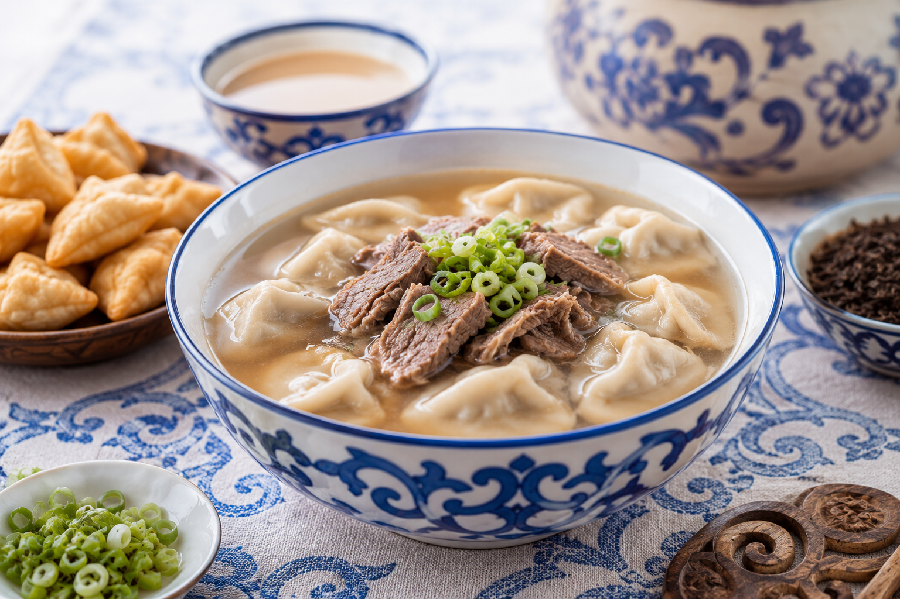

Натуральные продукты
Используются мясо, молочные продукты, мука и природные ингредиенты.
Вкус вековых традиций и кочевой культуры. Откройте для себя блюда, созданные природой, историей и временем.

Сила традиций, натуральность и гостеприимство
Используются мясо, молочные продукты, мука и природные ингредиенты.
Рецепты передаются из поколения в поколение, сохраняя вкус народа.
Блюда, рождённые степной жизнью и адаптированные к суровому климату.
Каждое блюдо — символ уважения и щедрости хозяев.
Настоящий вкус Калмыкии

Сочные пельмени с мясной начинкой — традиционное блюдо калмыцкого стола.

Отварное мясо с луком — простое, насыщенное и питательное.

Традиционный калмыцкий чай с молоком, солью и специями.

Воздушная выпечка, любимое угощение к чаю.

Калмыцкая кухня — это отражение истории, культуры и традиций кочевого народа. Простые ингредиенты, сытные блюда и уважение к гостю делают её по-настоящему уникальной.
Узнать большеЗакажите блюда или забронируйте столик